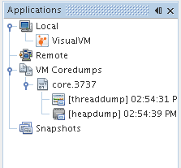
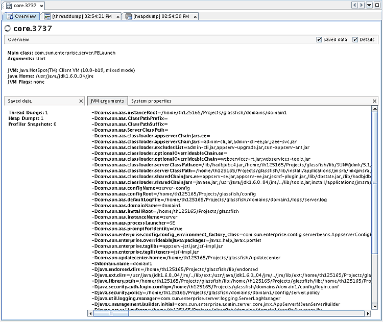

| Documentation Contents |
Working with Core DumpsWhen you start Java VisualVM, the Applications window is visible in the left of the Java VisualVM window. The Applications window enables you to quickly view running local and remote applications. The Applications also displays core dumps and profiling snapshots saved to your local system. The Core Dump node is visible in the Applications window if Java VisualVM is running on Solaris or Linux. Generally, Java VisualVM can only open a core dump if the core dump was taken on the same machine. A core dump contains informaton on the Java Development Kit (JDK) and kernel of the machine where the core dump was taken. To open the core dump in Java VisualVM, this information must match the JDK software and kernel of the local system. A core dump is a binary file capturing the entire heap contents at the moment the dump is captured. When you load a core dump in Java VisualVM, a node for the core dump appears below the Core Dump node. To view an overview of the core dump, right-click the core dump node and choose Open. (Alternatively, double-click the node.) You can right-click the core dump node and choose Heap Dump or Thread Dump to view the heap dump and thread dump from the core dump. 
You can then save the thread dump and heap dump to your local system. |
Copyright © 1993, 2011, Oracle and/or its affiliates. All rights reserved. Please send comments using this Feedback page. |
Java Technology |